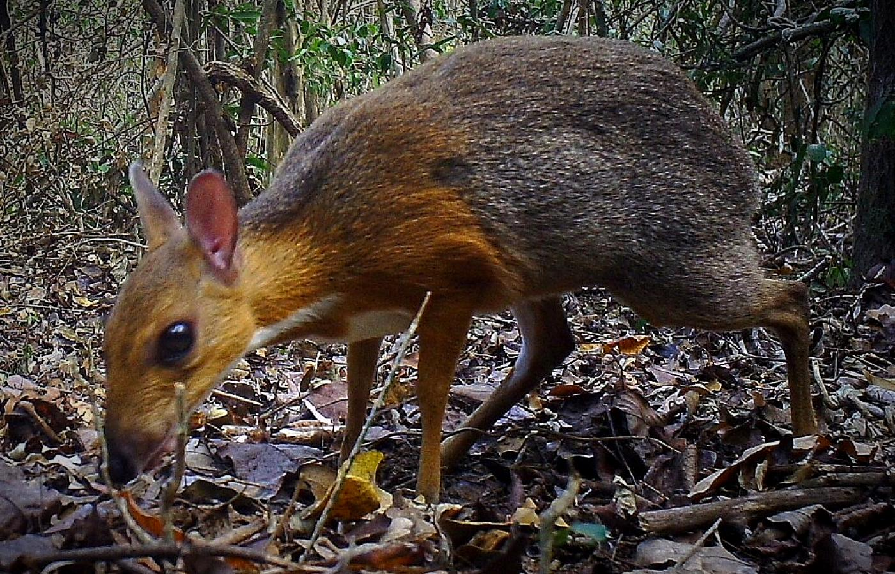

Kanczyl srebrnogrzbiety (Tragulus versicolor) to mały, endemiczny ssak z rodziny kanczylowatych, występujący w Wietnamie. Według IUCN brak jest wystarczających danych, aby określić jego status zagrożenia. Ten gatunek występuje naturalnie w Wietnamie. Pierwszy znany okaz pochodził z okolic miasta Nha Trang. Drugi okaz, zabity przez myśliwych w 1990 roku, został znaleziony w pobliżu rzeki Tra, około 20 km na północ od Kan Nack w prowincji Gia Lai. Ostatnia obserwacja miała miejsce w 2019 roku w prowincji Khánh Hòa. Rzeczywisty zasięg gatunku pozostaje nieznany z powodu ograniczonej wiedzy na jego temat, choć może również występować w sąsiadujących krajach: Kambodży i Laosie.
Jest on jednym z najmniejszych przeżuwaczy na świecie. Jeden z okazów miał 40 cm długości oraz ważył 1,7kg. Z powodu swoich rozmiarów oraz charakterystycznego wyglądu, mówi się na niego również myszojeleń. Powstała nawet nawiązująca do tej nazwy piosenka.
Niewiele wiadomo o tym gatunku. W księdze gatunków zagrożonych został zapisany jako niedostatecznie rozpoznany. Po 1990 uważano, że gatunek wyginął, jednak został on ponowanie zaobserwowany w 2019 roku. Natomiast jest on zagrożony z powodu wyinki lasów tropikalnych oraz przez rozwój Wietnamskiego przemysłu.
